Jangan Cuma Numpuk Sertifikat:
Bangun Portofolio yang
"Berbicara" ke Industri
"Grow Together. Share the Knowledge. Create the Impact."
Bedah perjalanan nyata membangun portofolio Web, AI, 4 HKI Negara, magang BUMN PT KAI, hingga berkarir di dunia kreatif sejak bangku kuliah.
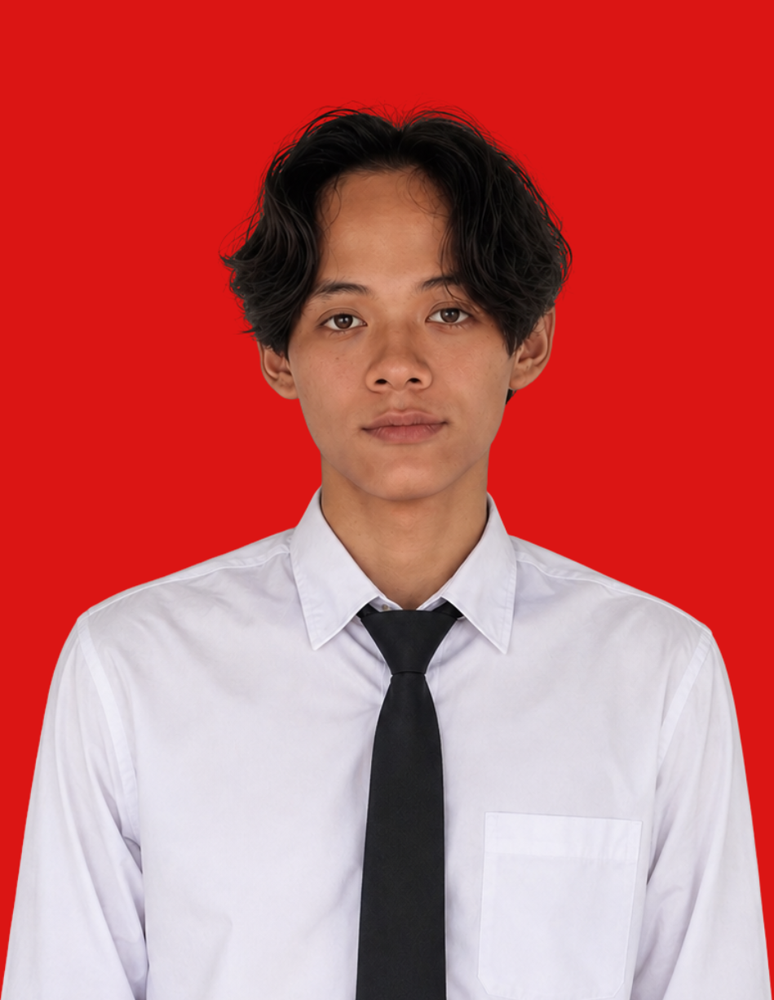
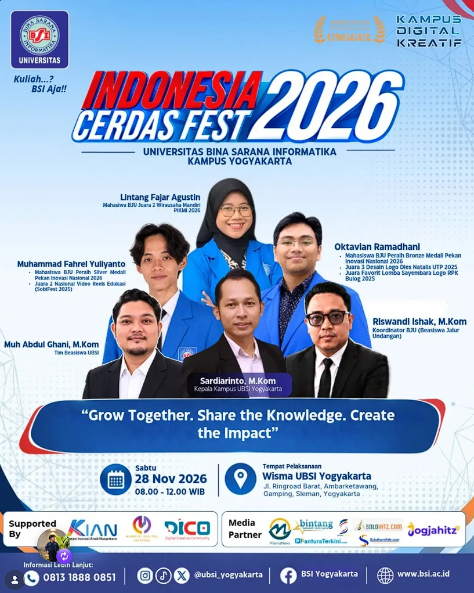
Bukan Start dari Privilege, Tapi dari Kesempatan yang Dikejar
SMK Multimedia → S1 Sistem Informasi (Beasiswa BJU)
Masuk UBSI lewat Beasiswa Jalur Undangan (BJU) bukan karena merasa sudah sempurna, melainkan modal awal agar bisa fokus mengeksekusi lebih banyak karya nyata.
Kenapa Pilih Jalan yang "Ribet"?
- Kuliah, memimpin HIMSI, ikut riset dosen & lomba, plus kerja kreatif berjalan beriringan.
- Karena skill di kelas baru matang saat benar-benar diuji di masalah dunia nyata.
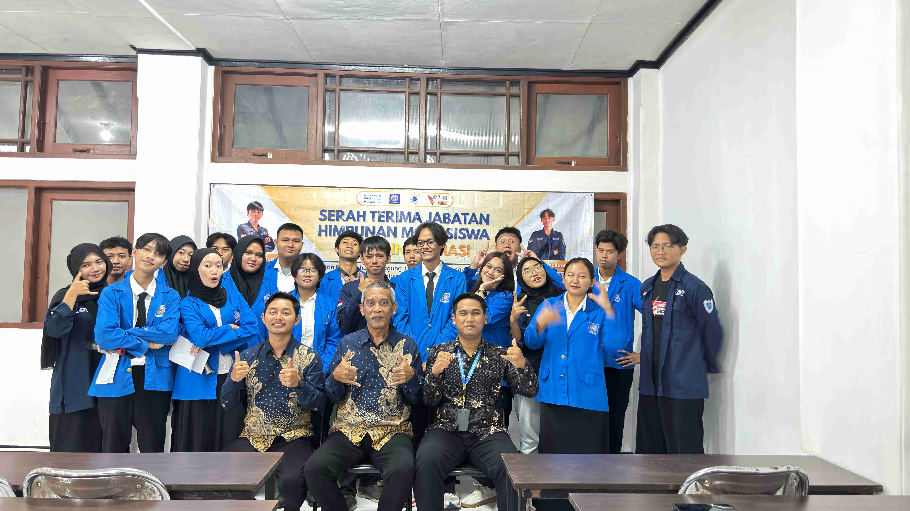
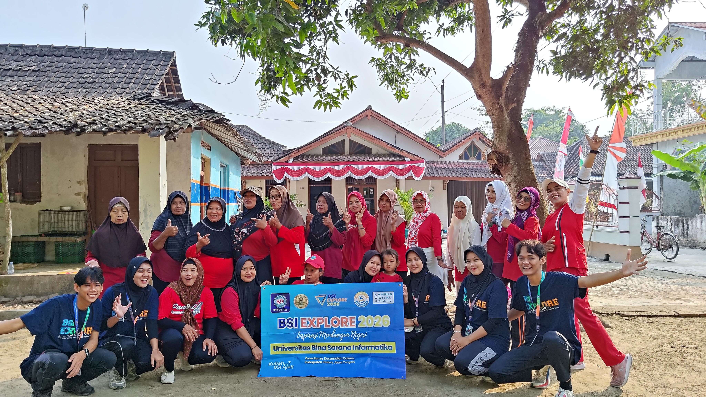
Kenapa Portofolio Lebih "Berbicara" dari Sekadar Angka IPK?
Ijazah & Transkrip IPK
- Mengukur seberapa patuh & konsisten kita mengikuti materi di ruang kelas.
- Ribuan lulusan baru punya angka IPK dan judul mata kuliah yang hampir sama persis.
- Hanya memberi tahu HRD bahwa kita pernah belajar teori.
Portofolio & Bukti Karya
- Membuktikan secara visual apa yang sudah berhasil kita buat dan berdampak.
- Menghemat waktu rekruter: klik link → langsung lihat web, video, HKI, dan metrik hasilnya.
- Menunjukkan inisiatif nyata sebelum diminta perusahaan.
Mengubah Tugas & Pengabdian Jadi 4 HKI Resmi Negara
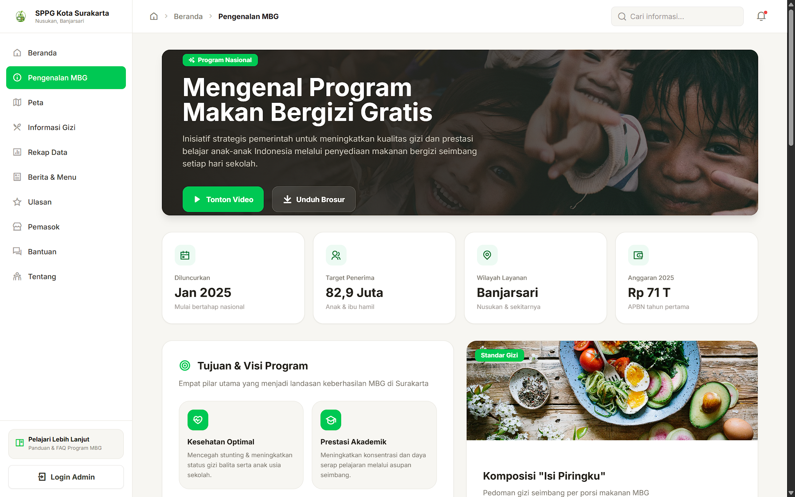
HKI #1 • Silver MedalPlatform MBG SPPG Nusukan
Sistem Web & GIS pemantau gizi AKG dan anggaran Makan Bergizi Gratis.
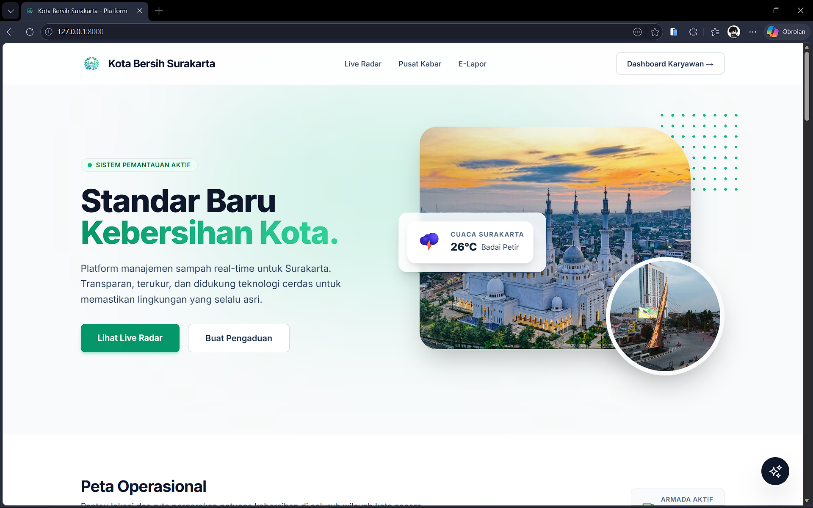
HKI #2 • BRIDA AwardKota Bersih Surakarta AI
Pengolahan sampah cerdas berbasis AI Assistant (Gemini) & pemetaan TPS.
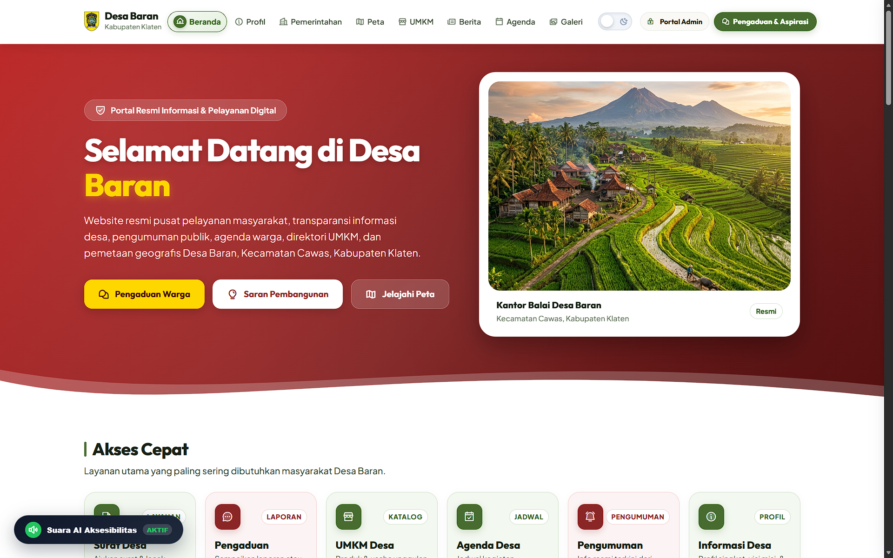
HKI #3 • 1 MingguWeb Official Desa Baran
E-Government & transparansi APBDes saat BSI Explore 2026, dikerjakan tunggal 1 minggu.
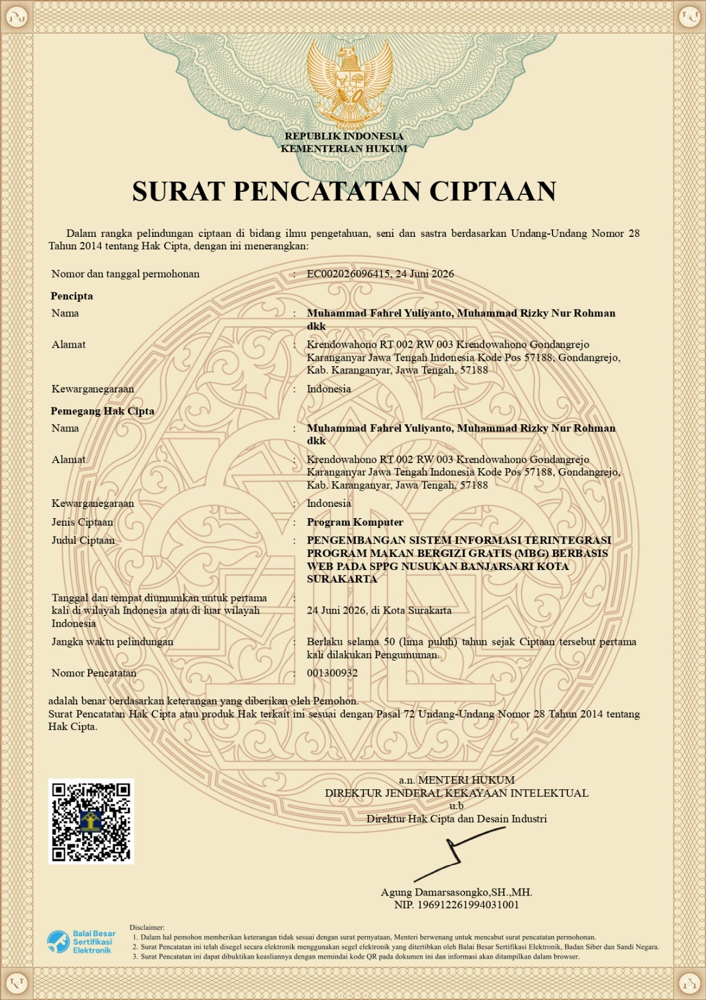
HKI #4 • TerbaruKriya Melikan PKM BIPEMAS
Kolaborasi riset dosen UBSI digitalisasi sentra kerajinan gerabah Desa Melikan.
Teruji di Sistem Informasi BUMN & Industri Kreatif
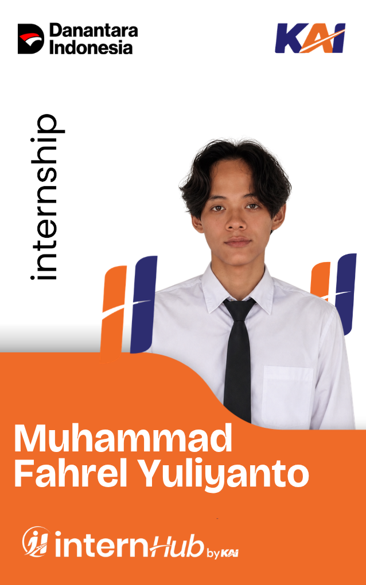
PT Kereta Api Indonesia (Persero)
- Resmi lulus program InternHub by KAI Unit Sistem Informasi DAOP 6 Yogyakarta (SKL:
KE.105/08/0003023/MAG/KA-2026). - Rekayasa modul aplikasi (Laravel/Flutter), optimasi database PostgreSQL, SQA Testing, & dokumentasi teknis enterprise.
- Didukung sertifikasi profesi nasional BNSP Database Administrator & kompetensi SQA.
Juragan Villa Tawangmangu (4 Akun Resmi)
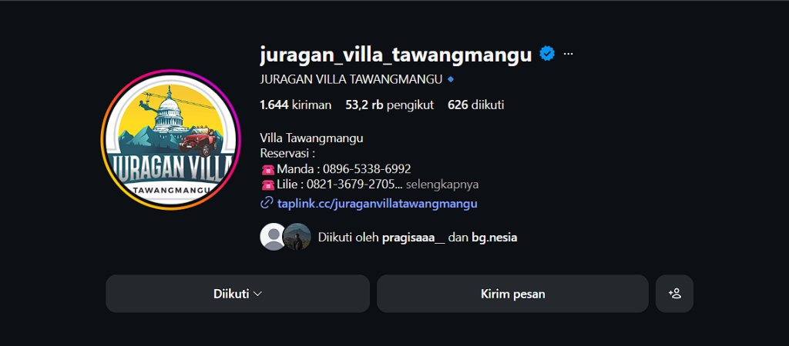
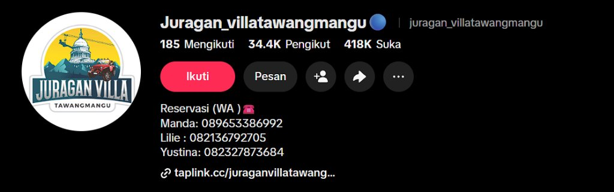
Menangani 2 IG & 2 TikTok properti wisata Tawangmangu-Kemuning, melanjutkan pengalaman di Volution Apparel, PT Tanur Tour, & 21+ video klien agency.
Karya Hebat Perlu Etalase Digital yang Siap Diklik Kapan Saja
Visual Pertama yang Memikat
Three.js Cosmic 3D + identitas terverifikasi & optimasi SEO Google Search Console.
Showreel & Bukti Akun
Thumbnail Google Drive 9:16 & 16:9 dengan pop-up theater + bukti akun IG/TikTok.
CV ATS + OCR Lamaran AI
CV bilingual siap cetak & portal ekstraksi poster loker otomatis ke surat resmi.
Jejak Digital Terverifikasi
Menghubungkan rilis berita media nasional, prosiding INOVATIF, & sertifikat HKI.
4 Langkah Meniru Proses Ini Mulai dari Semester Awal
Eksekusi Kesempatan Kecil
Jangan tunggu proyek besar. Ubah tugas kuliah, proyek UMKM sekitar, atau PKM menjadi karya yang benar-benar selesai.
Dokumentasikan Prosesnya
Simpan screenshot, video demo, sebelum-sesudah (before-after), dan angka dampaknya sebelum hilang dari HP.
Gunakan AI sebagai Co-Pilot
Pakai Gemini, AI Studio, Canva, CapCut, & GitHub Pages untuk mempercepat eksekusi tanpa menggantikan usaha belajar.
Satukan dalam 1 Link
Kemas rapi dalam satu tautan portofolio digital agar mudah dikirimkan ke rekruter, dosen, maupun klien kapan saja.
Upgrade Soft Skill Gen-Z:
Senjata Manusia yang
Tak Bisa Digantikan AI
Coding, desain, dan skrip bisa ditulis AI dalam hitungan detik. Lalu, kualitas apa yang membuat mahasiswa tetap dipilih, dipercaya tim, dan lolos dunia kerja?
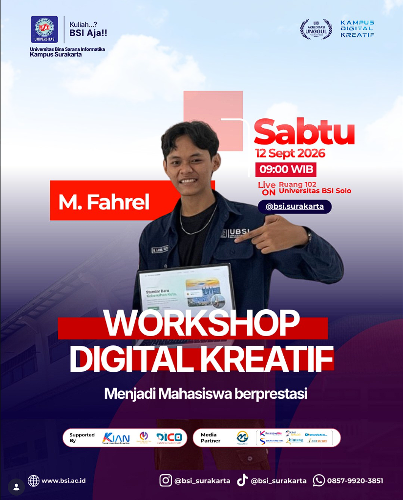
Realita Mahasiswa Gen-Z di Era Gempuran AI
Coba Angkat Tangan Jujur...
- Siapa yang sebenarnya jago teknis (desain/edit/ngoding), tapi masih canggung saat harus presentasi atau menghubungi HRD via WhatsApp?
- Siapa yang sering semangat di 3 hari pertama, lalu kena revisi atau kritik sekali langsung burnout / kehilangan mood?
Paradoks Era Kecerdasan Buatan (2026)
- Akses Teknis Setara: Semua mahasiswa sekarang bisa pakai Gemini, ChatGPT, CapCut, atau template siap pakai.
- Nilai Manusia Naik Drastis: Karena teknis makin murah & cepat, perusahaan jauh lebih mahal menghargai orang yang komunikatif, tahan deadline, dan bisa diandalkan.
Hard Skill Membuka Pintu, Soft Skill yang Membuatmu Bertahan
Hard Skill Menarik Perhatian
Skill teknis (Web, Database, Editing, AI) membuat CV dan portofolio kita lolos skrining awal untuk dipanggil wawancara.
Komunikasi & Sikap Meyakinkan
Di ruang interview PT KAI maupun klien kreatif, pewawancara menilai cara bicara, kejelasan ide, sopan santun, & antusiasme.
Attitude Menjaga Kepercayaan
Tanggung jawab deadline, bisa bekerja lintas tim/dosen, dan kedewasaan sikap adalah penentu mendapat predikat baik & karir lanjutan.
Komunikasi Terstruktur & Manajemen Waktu
"Komunikasi bukan berarti harus paling cerewet — melainkan paling jelas didengar."
- Latihan Bertahap: Dari divisi Kominfo HIMSI → Ketua Umum → Pemateri AI & Narasumber.
- Etika Chat Digital: Memahami cara membalas HRD/dosen lewat WhatsApp dengan sopan, singkat, dan solutif.
- Storytelling Karya: Bisa menjelaskan proyek rumit dalam 30 detik secara runtut.
"Kuncinya bukan multitasking tanpa arah, tapi manajemen prioritas."
- Real Case: Kuliah BJU Semester 5 + Ketum HIMSI + Magang BUMN + Konten Harian 4 Akun.
- Teknik Batching: Mengelompokkan kerja sejenis (1 hari pengambilan banyak footage untuk stok 1–2 minggu).
- Disiplin Jam Tidur & Kalender: Memisahkan waktu produksi fokus dari waktu hiburan/scrolling.
Ownership Mindset & Resiliensi Mental
"Jangan datang membawa keluhan — datanglah membawa opsi solusi."
- Mental Ownership: Membangun Web Desa Baran tuntas dalam 1 minggu saat tim membutuhkan solusi cepat.
- Kolaborasi Lintas Generasi: Luwes berdiskusi teknis dengan dosen (PKM BIPEMAS) maupun aparatur desa dan mitra UMKM.
- Negosiasi Cerdas: Saat jadwal bentrok/mendadak, langsung tawarkan opsi alternatif yang masuk akal bagi kedua pihak.
"Pisahkan kritik terhadap karyamu dari nilai harga dirimu."
- Lomba & Penolakan: Juara 2 SobiFest & Medali Silver lahir setelah berkali-kali mencoba & belajar dari kekalahan sebelumnya.
- Realita Dunia Agency & Klien: Revisi berkali-kali adalah bagian normal dari profesionalisme, bukan serangan pribadi.
- Growth Mindset: Setiap revisi dan penolakan lamaran kerja adalah data untuk memperbarui strategi berikutnya.
3 Arena Terbaik Melatih Soft Skill Mulai Hari Ini
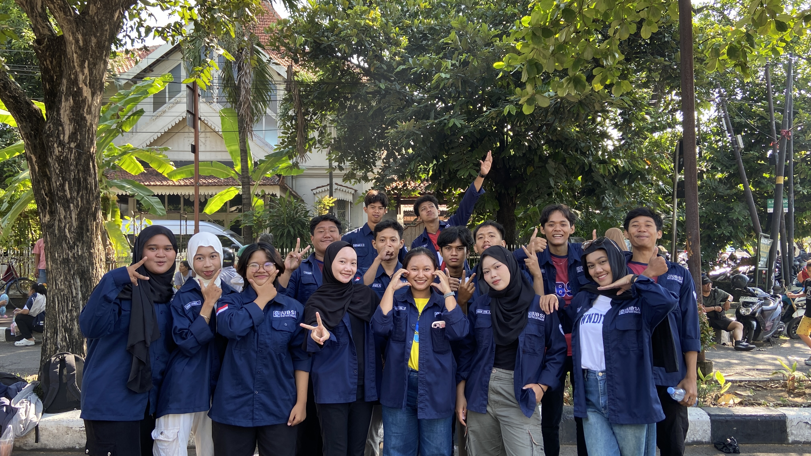
1. Organisasi & Panitia Event
Tempat paling aman melatih kepemimpinan, manajemen konflik tim, lobi mitra, dan berani pegang mikrofon sebelum masuk perusahaan.
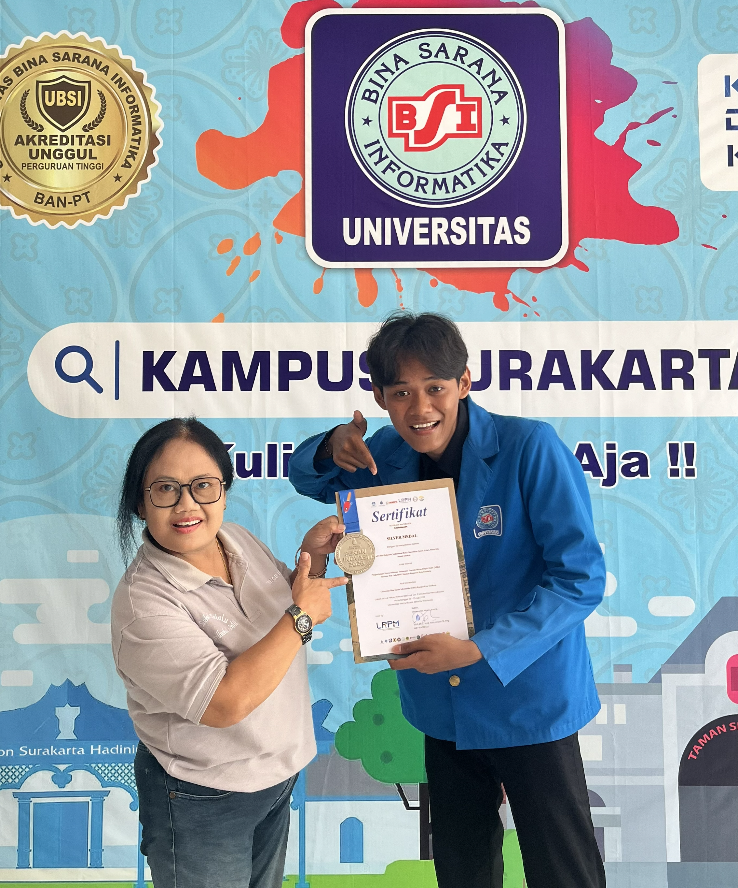
2. Lomba & Riset Dosen (PKM)
Mengasah berpikir terstruktur, presentasi di depan juri, bekerja lintas latar belakang dengan dosen pembimbing, dan ketangguhan mental.
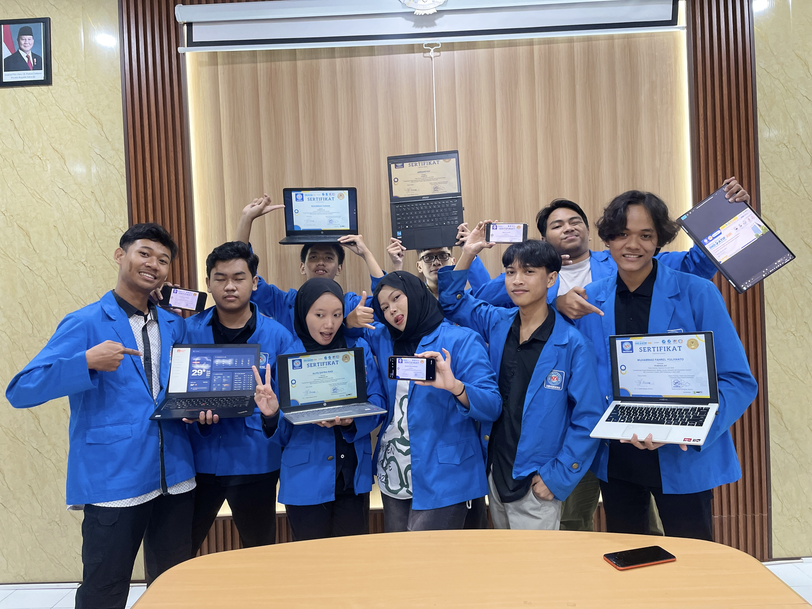
3. Proyek Nyata, Magang & Freelance
Berhadapan langsung dengan ekspektasi pengguna (siswa SMP, perangkat desa, klien agensi, hingga atasan PT KAI & Juragan Villa).
Workshop Challenge: Pitching Diri 30 Detik & Etika Komunikasi
"P kak, info loker msh ada? sy ga bs bsk soalnya jauh 60km, online aja ya?"
"Selamat malam Pak/Ibu, terima kasih undangannya. Mohon izin menanyakan apakah tahap awal memungkinkan via online, atau tatap muka di hari Senin?"
AI Bisa Membantumu 10x Lebih Cepat,
Tapi Attitude & Konsistensimu
yang Menentukan Kepercayaan.
Tantangan 7 Hari Setelah Indonesia Cerdas Fest 2026:
- Hari 1–3: Pilih 1 karya terbaikmu (tugas/desain/video) lalu dokumentasikan jadi visual portofolio.
- Hari 4–7: Ambil 1 peran baru di himpunan/tim yang memaksamu berbicara atau memimpin proyek kecil.
Mari Diskusi & Sesi Tanya Jawab
fhrelz.github.io/portfolio-3d-celestial